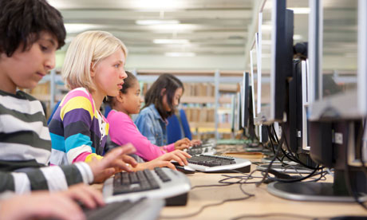
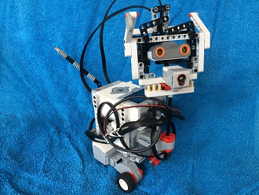

Programmeren op de basisschool: serieus spelen met plezier
Rotterdam en omstreken

Kinderen hebben iets met computers
De meeste kinderen zitten graag en veel achter de computer.
Maar daar waar normaal gesproken kennisoverdracht plaatsvindt van de oudere naar de jongere generatie, is er nu een probleem: kinderen weten vaak meer van computers af dan volwassenen.
Daardoor wordt hun nieuwsgierigheid niet geleid en blijven ze aan de oppervlakte hangen: spelletjes, youtube, facebook en soms zorgen dat de computer van papa of mama het weer doet.
De handigheid van kinderen met computers is soms verbazend voor ons, maar normaal onder de jeugd. Wie werkelijk goed mee wil komen in de informatie-maatschappij dient de computer volledig naar zijn hand te kunnen zetten.
Eén ding helpt mee om dit doel met kinderen te bereiken: computers kunnen temmen is cool.

Programmeren met of zonder robots?
Voor een eerste kennismaking met programmeren wordt in het basisonderwijs vaak gebruik gemaakt van robots, meestal gebouwd met Lego Mindstorms.
Robots, hoe eenvoudig ook, zijn fascinerend voor kinderen en worden tegenwoordig op allerlei manieren praktisch ingezet.
Wie er wat vanaf weet heeft daar plezier van, nu en in de toekomst.
Lego Mindstorms ziet er aantrekkelijk uit, maar is ook duur.
Niet iedere school, en zeker niet ieder kind, zal zich een dergelijke aanschaf kunnen veroorloven.
Veruit de meest populaire programmeertaal in het onderwijs wereldwijd is de in Nederland ontwikkelde taal Python.
Python heeft een eenvoudig instapniveau en maakt onbeperkte doorgroei mogelijk.
Ook Lego Mindstorms is in Python programmeerbaar.
De op deze wijze door kinderen opgedane kennis behoudt zijn waarde in middelbaar en hoger onderwijs, maar ook in de beroepspraktijk.
Met behulp van Python, dat gratis kan worden gedownload, kan de leerling ook thuis allerlei programma's maken en gebruiken, gewoon op een PC, laptop, tablet of zelfs mobieltje.
Verwerven van deze toekomstzekere vaardigheid is op deze wijze voor iedereen weggelegd, zonder dure Lego dozen te hoeven aanschaffen.
Wel geeft de beschikbaarheid van Lego Mindstorms op school extra mogelijkheden voor een aantrekkelijke kennismaking.
Met de combinatie Mindstorms en Python kunnen robots worden gemaakt die op slimme wijze op hun omgeving reageren.
Het leuke is dat diezelfde programma's daarna ook kunnen worden gebruikt om andere, zelfs professionele, robots aan te sturen.
Om de wondere wereld van de computer-programmering voor ieder kind toegankelijk te maken, is de workshop opgebouwd uit
twee delen.
Het eerste deel brengt de kinderen de beginselen van het programmeren bij. Alles wat hiervoor nodig is, is een computer. Deze hoeft niet snel te zijn of bijzondere eigenschappen te hebben. Alle gebruikte software is gratis.
Het tweede deel maakt, indien de school hierover beschikt, gebruik van de Lego Mindstorms EV3 om de kinderen een slimme robothond te laten bouwen en programmeren. Indien geen Mindstorms voorhanden is, leren de kinderen in het tweede deel zelf een eenvoudig, maar echt werkend computerspelletje te maken. Dit is bron van trots, en je kunt 't ook nog aan je ouders, broers en zussen laten zien. In beide varianten maken ze kennis met een aantal basisprincipes van robot- en spel-programmering, met name de zogenaamde besturings-lus.
Er wordt in de workshop gewerkt in groepjes met wisselende rolverdeling.
Binnen een groepje zijn de rollen als volgt:
Voor een opdracht
met Lego:
1 of 2 hardware-bouwers: bedenken en bouwen de Lego constructie
1 of 2 software-bouwers: bedenken en bouwen het programma
1 of 2 kwaliteits-inspecteurs: testen het resultaat en brengen daarvan verslag uit
Voor een opdracht
zonder Lego:
1 of 2 software-ontwerpers: bedenken welke programma-elementen nodig zijn
1 of 2 software-bouwers: bouwen deze elementen samen tot een werkend programma
1 of 2 kwaliteits-inspecteurs: testen het resultaat en brengen daarvan verslag uit
Naast zijn of haar eigen rol werkt ieder groepslid mee aan het geheel.
Een kwaliteits-inspecteur kan dus bijvoorbeeld ook zelf aan het bouwen zijn.
Computers zijn handige hulpmiddelen, ook in het onderwijs.
Om ze echt te leren kennen zijn mensen echter onmisbaar.
Dit hoeven geen experts te zijn, ze hoeven slechts een beroep te doen op de natuurlijke nieuwsgierigheid van kinderen.
Samen uitzoeken hoe iets werkt is het sleutelwoord.
Sommige kinderen krijgen van huis uit een onderzoekende houding mee en worden door ouders of anderen vergezeld op hun spontane ontdekkingstochten.
Anderen zijn meer passief, ze kijken naar YouTube of spelen spelletjes, maar vragen zich niet af wat erachter zit.
Juist deze kinderen hebben de docent nodig als gids en rolmodel.
Docenten hoeven niet alles van computers te weten, maar ze moeten een kind wel kunnen aanmoedigen zelf op onderzoek te gaan.
De computer is speelgoed in de beste zin van het woord, spelen is leren.
Speelgoed is niet iets om ontzag voor te hebben, maar om plezier aan te beleven.
Het meest prominente doel van de workshop "Leren programmeren op de basisschool" is simpel:
Voldoende programmeerkennis opdoen om ontspannen en met zelfvertrouwen samen met de kinderen op onderzoek te gaan.
Doelgroepen, indeling, kosten en lesmateriaal
Twee doelgroepen
De workshop "Programmeren op de basisschool" kan op twee manieren worden ingezet.
De
eerste manier is, dat de lessen-serie aanvankelijk door een ervaren externe workshop-leider aan de klas wordt gegeven, klas inclusief docent wel te verstaan.
Na hier één of meer keren aan deelgenomen te hebben komt de docent op het punt dat hij/zij dit zelf kan overnemen.
Voordeel is dat er geen extra docent-uren worden verbruikt en dat de leerlingen onmiddellijk van het aangebodene profiteren.
Groep 7 en 8 komen hiervoor zondermeer in aanmerking, kinderen met een plus-programma uit groep 6 ook.
De
tweede manier is, dat de lessen-serie eerst aan alle docenten wordt gegeven.
Met nadruk wordt hier gesproken over "alle" docenten, want programmeren is iets dat iedereen kan leren.
Vroeger ging het verhaal dat mannen niet konden koken, maar nu kan vrijwel elke man dat, en meestal met plezier.
Natuurlijk, niet allemaal koken we een rijsttafel, maar bijna iedereen heeft het zelfvertrouwen een verse warme maaltijd op tafel te kunnen zetten.
Soortgelijke "fixed mindset" mythes doen ook de ronde over programmeren.
Het is van belang dat de kinderen hier niet in gaan geloven, in het bijzonder de meisjes!
Juist docenten (m/v) met een brede belangstelling buiten de techniek kunnen dit bewerkstelligen.
Indeling workshop
De workshop bestaat uit 6 lessen van elk 2 uur.
Een goede lesfrequentie is eenmaal per week.
Op die manier is er tijd het geleerde te verwerken en zelf toe te passen, maar zakt het niet te veel weg.
De indeling van de workshop is flexibel en er wordt gedifferentieerd lesgegeven.
De gespecificeerde inhoud van de lessen is daarbij een richtlijn, maar geen keurslijf.
Als sommigen meer tijd nodig hebben is dat OK, als het geleerde maar landt.
Als sommigen sneller gaan is dat ook OK, er is ruimschoots extra lesmateriaal beschikbaar.
Vragen zijn welkom, zijpaden vaak het verkennen waard, en verkennen is waar het om draait.
Voor de docenten wordt de workshop afgesloten met een deelname-certificaat.
Dit geldt ook voor docenten die de workshop samen met hun klas volgen, mits zij inderdaad actief aan de lessen meedoen.
Voor deelname aan de workshop is geen voorkennis van computers of programmeren nodig.
Kosten en lesmateriaal
De kosten van deze workshop bedragen €45 per uur.
Er kan worden gewerkt met maximaal 6 groepjes van 6 leerlingen.
Het lesmateriaal bestaat uit opgaven, uitwerkingen en een klein aantal Powerpoint sheets. Daarnaast wordt gebruik gemaakt van gratis te downloaden software en aanvullend vrij toegankelijk on-line materiaal.
Indien voor de Mindstorms-variant wordt gekozen, kan gebruikte programmeersoftware het handigst op een micro-SD chip worden gezet, die aan de zijkant in de Lego Mindstorms EV3 wordt geschoven. Deze chips kunnen desgewenst voorgeïnstalleerd als onderdeel van het lesmateriaal worden geleverd. In dat geval bedragen de kosten per chip (dus per gebruikte EV3 unit) €10.
Een beamer of smartboard, PC's of laptops met een internet verbinding voor de programmering en eventuele Lego Mindstorms hardware (EV3 units, motoren, sensors, aansluitkabels en programmeerkabel, bouwsteentjes en wielen) worden geacht op de school zelf aanwezig te zijn. Van tevoren worden desgewenst met de workshopdocent alle benodigdheden geïnventariseerd.
Les 1. In de voetsporen van Mondriaan
De schilder Piet Mondriaan had een recept in zijn hoofd met vaste, primaire kleuren, schema's en verhoudingen.
Een Mondriaan is daardoor gemakkelijk te herkennen.
Als Mondriaan nu had geleefd, had hij een computer gebruikt.
Na afloop van deze eerste les kan de deelnemer variaties op schilderijen in Mondriaan-stijl maken met behulp van programmering in Python.
Omdat online wordt gewerkt, hoeft geen software te worden geïnstalleerd.
Daarom is dit een leuke activiteit om mee te beginnen met de leerlingen, zonder voorbereiding.
Les 2. Hoe oud ben je?
De computer kan niet alleen tekenen maar ook rekenen.
Hij is onvermoeibaar, en via een vaag en antwoord spel kan hij kinderen helpen oefenen.
Programma's om de tafels te leren zijn er in overvloed, maar hoe werken ze nu eigenlijk?
Na afloop van deze les kan de deelnemer zelf een programma schrijven om willekeurige rekenopgaven te oefenen.
Het voornaamste is niet echter het resultaat maar de ervaring van de weg erheen: het zelf maken van een computerprogramma dat iets nuttigs doet.
Les 3. Een Python in je PC
Om te programmeren heb je geen internet nodig.
In deze les zetten we een aantal hulpmiddelen op onze PC waarmee we desnoods in de Sahara robots kunnen programmeren.
We experimenteren met het gebruiken van de eerder geschreven programma's op de eigen PC in plaats van via internet.
Daarmee zijn we klaar voor een sprong in het diepe...
Les 4 (Mindstorms variant). Hersenbriesjes
Aan het begin van deze les zorgen we ervoor dat de Lego Mindstorms EV3 computer-bouwsteen voortaan Python snapt.
Aansluitend leren we hoe Lego Mindstorms bouwstenen worden bestuurd door Python.
Daarmee ligt de weg open voor robots die hele andere dingen kunnen dan meneer Lego in gedachten had.
Aan het einde van de les drie worden YouTube filmpjes van een aantal treffende voorbeelden getoond:
Een robot die Sudoku's op kan lossen, een op twee wielen balancerende robot die een drankje kan serveren en een cobra die snelle uitvallen kan doen en waar kinderen vol ontzag mee omgaan.
Les 5 en 6 (Mindstorms variant). Tuffy de robothond
Dit zijn de twee lessen waarin al het geleerde samenkomt met als doel vervaardiging van een eenvoudige robothond die op z'n omgeving reageert.
Er wordt in groepjes gewerkt en er is geen verplicht eindniveau.
Het gaat erom vrijuit te experimenteren, waarbij zowel van successen als van problemen wordt geleerd.
De ultieme robothond kan achter een groen voorwerp aanlopen, van een rood voorwerp wegvluchten, stoppen voor een obstakel, kwispelen, zijn kop bewegen en spreken.
De programmacode beslaat slechts twee bladzijden en kan als voorbeeld worden gebruikt om zelf aan de slag te gaan.
Echter een hond die alleen kan bewegen is ook goed.
En een hond die eigenlijk meer op een kruising tussen hijskraan en een botsautootje lijkt is ook goed.
En een hond die stilstaat maar wel Goethe citeert is ook goed.
Kortom: Het gaat om het spel en niet om de knikkers.
Het lesdoel is bereikt als je ontspannen en met plezier kunt spelen met wat er ter beschikking staat.
Dan sta je in de startblokken om dat ook samen met kinderen te gaan doen.
Les 4 (PC variant). Op elkaars schouders.
Programmeurs doen niet alles alleen, ze staan op elkaars schouders. Zo maken ze vaak gebruik van programma-bibliotheken om hun doel te bereiken. Computer-spelletjes maken meestal gebruik van speciale spel-bibliotheken. Daarin zitten veelgebruikte stukjes programma, bijvoorbeeld om een figuurtje (sprite) over het beeldscherm te laten bewegen. In deze les leren de kinderen de gratis spel-bibliotheek Pyglet te gebruiken.
Les 5 en 6 (PC variant). Maanlander.
In de laatste twee lessen maken de kinderen zelf een eenvoudig spel. Het betreft een maanlander met een beperkte voorraad brandstof. Zorg ervoor dat je niet voor eeuwig het heelal in schiet, maar zet 'm wel zachtjes neer, anders gaat ie kapot en moet je de rest van je leven op de maan doorbrengen. En wat betreft de brandstof: op is op. Pittig detail: dit was precies het dillemma dat Neil Armstrong had, toen hij zijn maanlander met nog voor 3 seconden brandstof op handbesturing veilig liet landen (echt waar). Flink oefenen met je eigen simulator dus.
De maanlander van de één ziet er simpel uit en kan alleen op en neer. De maanlander van de ander lijkt op het origineel en kan ook kraters ontwijken. Het maakt niet uit. Ook hier gaat het weer om de ervaring: ik kan dit zelf!